Así usamos nuestros gadgets para consumir información
Sun, 27 Nov 2011 11:29:28 PST
Hoy en día hemos pasado de compartir en nuestro salón las horas en familia o amigos junto al televisor, a ser un poco más individualistas y buscar mediante nuestros aparatos electrónicos cada uno lo que más le satisface. Al margen de las teorías absurdas de aislamiento y demás, los gadgets tales como smartphones, tablets y [...]
Hoy en día hemos pasado de compartir en nuestro salón las horas en familia o amigos junto al televisor, a ser un poco más individualistas y buscar mediante nuestros aparatos electrónicos cada uno lo que más le satisface.
Al margen de las teorías absurdas de aislamiento y demás, los gadgets tales como smartphones, tablets y portátiles han modificado nuestros patrones de comportamiento. Pero no sólo en el sentido de que llenan más horas de nuestro entretenimiento, o nos facilitan la lectura de noticias y nos hacen estar más informados, o nos facilitan el trabajo. Lo más curioso es que según que aparato utilizamos, consumimos la información de diferentes maneras. Y podemos estar viendo lo mismo, pero no hacemos lo mismo.
Y podría tener una explicación, llamada regla del entorno. Diferentes entornos son responsables de diferentes usos de los aparatos. No obstante me sigue pareciendo curioso el tema, a la vista de los gráficos que ahora vamos a ver en los que está claro que aunque somos animales de costumbres, parece que con los tiempos y la tecnología, esto está cambiando.
 En este primer gráfico podemos ver como la gráfica va aumentando según avanza el día, son el número de artículos leídos por hora por los usuarios de Read it Later que utilizan ordenador para leer. Hay una clara evolución de las siete en adelante, un pequeño bajón a partir de medio día y un pico a partir de las nueve.
En este primer gráfico podemos ver como la gráfica va aumentando según avanza el día, son el número de artículos leídos por hora por los usuarios de Read it Later que utilizan ordenador para leer. Hay una clara evolución de las siete en adelante, un pequeño bajón a partir de medio día y un pico a partir de las nueve.
Pero cuando usamos el móvil, la cosa cambia. La gráfica fluctúa considerablemente, en los cuales podemos encontrar picos en horas clave de nuestro día, como son desayuno (6 a 7 aprox.), transporte hacia el trabajo (8-9h), vuelta del trabajo (5-6), descanso y rato de sofá, cena y antes de ir a dormir (8-22h).
Está claro que aquí las costumbres se hacen más visibles. Y es que mal que nos pese muchos de nosotros durante el trabajo leemos en el ordenador no podemos utilizar nuestros móviles tanto. Hacen honor a su nombre y su uso se centra cuando estamos en movimiento o cuando nos es más cómodo utilizarlo que depender de un ordenador. Pero ojo, ¿y las tablets? Lo vemos.
Pues aquí parece que el usuario de tablet es más activo a partir de las seis de la tarde, hasta la hora de dormir aproximadamente. Una vez más, un dispositivo distinto, una manera distinta de consumir información. Es muy curioso pero no deja de tener una explicación bastante lógica a mi parecer.
Según un grupo de personas, dicen que existe esta regla del entorno que hemos comentado antes. Según donde estemos, hacemos uso de los aparatos de una manera u otra. Yo creo que el tema se enfoca de otra manera. Utilizamos los aparatos según dónde estemos y la comodidad de la que dispongamos. Así usamos el móvil en los momentos en los que no disponemos de otro aparato. Ejemplos: Yo desayuno viendo el reader desde mi móvil porque es algo rápido mientras me estoy acabando de despertar, no me es necesario desplazarme a ningún ordenador y es manejable. Puedo tener la tostada en una mano y el móvil en otra, cosa que con una tablet no podría (o arriesgándome a que se me cayera).

Así es como durante lo que sería la jornada laboral las lecturas crecen en ordenadores. En nuestro puesto de trabajo en la mayoría de casos estamos muchas horas delante de un pc, con lo que lo más normal es que sea con este aparato con el que nos manejemos más que con el móvil. Por eso cuando hemos vuelto a casa, nos hemos puesto cómodos y estamos en el sofá, es cuando podemos disfrutar de internet más a lo grande y más cómodamente con un tablet. Porque con un portátil quizá es más incómodo.
Como veis hay estudios para todos los gustos y opiniones y conclusiones también. La mia es que hacemos uso de unos u otros aparatos dependiendo de la pereza que nos de movernos. ¿Cual es la vuestra? ¿Coincidís en los patrones que se muestran en las gráficas?
Fuente | Lukew
Lo más raro de la red: el platanófono, regalos vintage de Apple y a qué huele Internet
Sun, 27 Nov 2011 03:21:45 PST
Una semana más nos encontramos en la sección raruna de Omicrono, para recopilar los conceptos más estrambóticos que nos encontramos por Internet. Y es que ya un domingo sin ver rarezas de la red, es un domingo más bien soso, raro… Esta semana os traemos 3 cosillas que seguro os van a gustar. ¿No os [...]

Una semana más nos encontramos en la sección raruna de Omicrono, para recopilar los conceptos más estrambóticos que nos encontramos por Internet. Y es que ya un domingo sin ver rarezas de la red, es un domingo más bien soso, raro…
Esta semana os traemos 3 cosillas que seguro os van a gustar. ¿No os lo creéis? Seguro que vuestra opinión cambia cuando os cuente que ya es posible hablar por teléfono a través de un plátano, que os ayudamos a que decidáis vuestros regalos para Navidades con un kit vintage de Apple y que podréis usar vuestro sentido del olfato cuando estéis navegando por la red de redes. Pero todo esto lo trataremos con más detalle a continuación.
Capítulo IX: de platanófonos, kits vintage de Apple y el olor de Internet
Antes de ponernos manos a la obra, vamos a recordar brevemente lo que vimos en la última entrega de “lo más raro de la red“. Si recordáis, conocimos el invento de una empresa española: el huevo volador. También vimos como jugar al mítico juego de recreativas “Asteroids“, solamente con los ojos. Por último conocimos un concepto revolucionario, las lentillas “amedicamentadas“.
Y ahora sí, ¡empezamos!
Habla por teléfono con un plátano
Y es que hablar por teléfono con un plátano es sólo una de las posibilidades que nos ofrece el proyecto conocido como computación invocada en el que mediante cámaras de alta velocidad, sensores tipo kinect y proyectores se dota a todo tipo de objetos de “propiedades tecnológicas” según nos cuentan en microsiervos.
Para el caso del platanófono, gracias a unos emisores de sonido se puede conseguir que el sonido del teléfono parezca provenir de un plátano. Tan sólo hay que hacer un gesto con la mano para que el equipo interprete que el plátano va a tomar el rol de teléfono.
Os preguntaréis, ¿qué mente privilegiada se le puede haber ocurrido hacer esto? Quién si no, los japoneses siempre un paso por delante del resto de mortales, en concreto en la Universidad de Tokio, han logrado llevar a la prática esta idea tan original.
Lo bueno de esto es que si te has quedado con hambre después de una larga conversación, el plátano te ayudará a llenar el vacío de tu estómago. Y no sólo eso. En una época en la que las grandes compañías están luchando por demostrar que su teléfono es el mejor, damos una vuelta de tuerca y con nuestra iBanana marcaremos tendencia (de momento va a ser difícil sacarlo de casa) :D
Catálogo de regalos Apple
Que no se diga que en Omicrono no os damos ideas para regalos en estas Navidades. Prueba de ello es este gran recopilatorio de productos Apple que os vamos a presentar gracias a technabob. Se trata de reliquias de 1983 del catálogo de regalos de Apple.
Vamos a empezar con todo un clásico en el tema de regalos: las camisetas. Como podéis observar se trata de modelos en tres colores y con una manzana multicolor que representa con el segundo logo de Apple, antecedida de una estela dotando a la manzana de movimiento como si de una estrella fugaz se tratara 
Qué mejor sensación que tomar un café a primera hora de la mañana en una taza de Apple. Pero también lo acompañamos con unos vasos con el sello de Apple para tomar una copa tranquilamente por la noche mientras molemos el café para tenerlo preparado la mañana siguiente 
Cómo vemos, son objetos bastante curiosos que si bien en los años 80 pudieron ser algo realmente moderno y cool, parece que hoy en día son simplemente reliquias. Aunque, quién sabe, esto de las modas es un enigma y solo es que Apple se lo proponga y lo venda como moda vintage… éxito asegurado
¿A qué huele Internet?
Seguramente a más de uno al leer ¿a qué huele Internet?, se le ha venido algún anuncio de televisión que preguntaba a qué huele las nubes. Lo reconozco, a mi también me ha pasado. En este caso, apreciar el olor de internet, es a través de un curioso aparato llamado Olly, que nos presentan en engadget.

Olly, que ha sido creada por Mint Digital, se trata de un aromatizador USB que tiene como objetivo que aprecies el olor de cualquier cosa que desees. El mecanismo es el siguiente: creas tu propia réplica usando una impresora 3D, e introduces en su bandeja una muestra de los aromas que desas transmitir. La ventaja es que puedes tener tantos Ollys como olores desees, y posteriormente utilizando una aplicación, Olly se encargará de darte el toque de frescura dependiendo en qué página web te encuentres.
Aviso a navegantes: como podréis intuir, no todos los olores van a ser iguales (ni buenos). Por ejemplo, si estáis navegando por la Wikipedia, no se desprenderá el mismo olor que si navegais por X (cambiar X por cualquier página que consideréis basura).
Los hologramas táctiles ya son una realidad
Sat, 26 Nov 2011 10:16:25 PST
Puede parecer un título demasiado contundente y tendencioso pero no nos engañemos, los hologramas ya existen y están muy, muy cerca de nuestro día a día. Atrás queda esa idea y concepto futurista más propio de una película de ciencia ficción que de una realidad palpable. Ya os hablamos de los primeros progresos increíbles que [...]
Puede parecer un título demasiado contundente y tendencioso pero no nos engañemos, los hologramas ya existen y están muy, muy cerca de nuestro día a día. Atrás queda esa idea y concepto futurista más propio de una película de ciencia ficción que de una realidad palpable.
Ya os hablamos de los primeros progresos increíbles que se estaban desarrollando en los laboratorios de Microsoft, trabajando con la cámara del Kinect. Pero por lo visto no es la única empresa que se está dedicando a desarrollar este tipo de tecnologías. En la carrera por conseguir una realidad virtual más y más palpable, la empresa rusa Displair está consiguiendo grandes avances. No sólo logran representar hologramas en 3D, si no que son manipulables.
Y verlo es impresionante, Displair ha conseguido desarrollar un sistema, que aunque en apariencia es bastante primitivo aún, puede dar mucho que hablar y su desarrollo va a ser digno de observar. Un grupo de investigación que promete dotar a su producto de características únicas.
Todavía está en pañales, pero por lo que hemos podido ver, y las galerías de fotos, parece que quieren desarrollar una especie de proyector holográfico doméstico, cual televisor convencional. Una idea sin duda revolucionaria y que traería el futuro un poquito más cerca de lo que nos pensábamos cuando veíamos en las películas estas tecnologías.
Lo cierto es que rebuscando un poco en internet es posible que se pueda adquirir ya, a unos precios que oscilan entre los 3.000$ y 5000$, no apto para todos los bolsillos.
El funcionamiento es bastante curioso, las imágenes se proyectan en una especie de humo frío que genera el aparato y mediante un sensor de movimiento parecido al que usa Kinect detecta nuestro movimiento. De momento dado el precio, tendremos que seguir soñando con tener en casa algo así, pero nos podemos conformar viendo en vídeo cómo funciona.
Impresionante es poco, no quiero pensar cómo estarán estos proyectos de aquí a un año más o menos. Es increíble la capacidad de invención inagotable. Con estas cosas no es descabellado que piense que el futuro ya es ahora.
Via | The Next web
Transforma tu monitor en un LCD espía que sólo tu puedes ver [Tutorial paso a paso]
Sat, 26 Nov 2011 03:44:28 PST
Cada día alucino más con la gente, y mira que esta idea es sencilla. Nunca se me había ocurrido, pero fabricarse una pantalla que solamente tu puedes ver con unas gafas para ello es una idea buenísima. La utilidad real al final quizás no sea demasiado práctica, pero ver la cara que pone la gente [...]
Cada día alucino más con la gente, y mira que esta idea es sencilla. Nunca se me había ocurrido, pero fabricarse una pantalla que solamente tu puedes ver con unas gafas para ello es una idea buenísima. La utilidad real al final quizás no sea demasiado práctica, pero ver la cara que pone la gente cuando te tiras trabajando una jornada entera frente a una pantalla blanca no tiene precio. ¿Quieres saber cómo hacerlo? Pues te lo contamos.
Esto entra claramente dentro de la categoría brikogeek, y aunque es un proceso un poco delicado no es en realidad demasiado difícil. Eso si, no te la juegues con tu monitor principal, esto es más bien una oportunidad de hacer algo con ese monitor viejo de 16″ que tienes en el trastero tirado sin ningún uso. Se que te prometiste usarlo mil veces, pero creo que después de 5 años ya va siendo hora de admitir la realidad, y esto es una buena salida que le puedes dar.
Básicamente lo que vamos a hacer es quitar el filtro polarizador de nuestra pantalla LCD y llevarlo fuera. Este filtro, por explicarlo de una forma muy sencilla, dirige los rayos de luz que tienes que ver, y el resto los cancela. Es decir, desde tu pantalla sale un chorro de luz blanca que este filtro reordena y te dirige para que veas sólo lo que tienes que ver. Perdonad la explicación tan simple, pero es para entendernos y saber qué vamos a hacer en este proceso, ya que quitamos este filtro para que en lugar de estar en la pantalla esté fuera, y sólo veamos lo que hay en la pantalla los que tengamos ese filtro.
El primer paso del proceso es desmontar la pantalla, de modo que quitamos la protección que hay delante de los filtros y el cristal del LCD.
A continuación tenemos que cortar por los bordes para retirar los filtros. Esta parte es delicada, porque hay dos filtros, el polarizador y el anti reflejos. El segundo no nos sirve, así que tenemos que separarlo del primero, y puede resultar algo complicado.
Estos filtros van pegados al cristal del LCD, por lo que al retirarlos quedarán restos de pegamento. Tenemos que usar un disolvente para limpiarlo a conciencia y dejar la pantalla totalmente pulida y limpia, sin restos de pegamento para que se pueda ver correctamente.
Y ya prácticamente hemos acabado. Ahora simplemente tendremos que rearmar el monitor y conectarlo al ordenador. Para cualquier persona sólo emitirá luz blanca, pero para quien mire a través del filtro polarizador estará lo que de verdad hay en la pantalla.
Y si te sientes con ganas de seguir haciendo el manitas puedes coger unas gafas viejas y recortar el filtro polarizador para adaptarlo a estas, de modo que sólo con esas gafas puestas se pueda ver la pantalla.
Aquí tienes las intrucciones originales detalladas para que puedas seguirlas si te atreves con el proceso, ¿lo vas a intentar?
Descarga cualquier página web y accede a ella sin conexión a Internet con HTTrack
Fri, 25 Nov 2011 10:17:09 PST
¿Cuántas veces encuentras un artículo en la red que te parece interesante, pero que no tienes tiempo de leer en ese momento? Pues HTTrack es la solución, por que permite la descarga de sitios completos con buena calidad, actualmente se encuentra en su version 3.44-1 y esta disponible tanto para Linux como para Windows. HTTrack es un programa gratuito. [...]
¿Cuántas veces encuentras un artículo en la red que te parece interesante, pero que no tienes tiempo de leer en ese momento? Pues HTTrack es la solución, por que permite la descarga de sitios completos con buena calidad, actualmente se encuentra en su version 3.44-1 y esta disponible tanto para Linux como para Windows. HTTrack es un programa gratuito.
El programa se instala en inglés, pero posteriormente podemos cambiar la interfaz a castellano, para ello abrimos desde el menú “Preferences” y elegimos la opción ”Language preferences”. Se abrirá una ventana con información sobre el programa y en la que puedes cambiar en un cuadro de lista a otros idiomas, Pulsamos en Castellano que se encuentra el primero de la lista, por ultimo, pulsa el botón “OK”. Para aplicar los cambios hay que cerrar y volver a abrir el programa, una vez ya “reiniciado” el programa tendrás todo en castellano.
Tiene una interfaz muy sencilla. Primero nos pedirá que asignemos un nombre al proyecto, es decir como queremos llamar la copia del sitio a descargar, en “Categoría del proyecto” debemos asignarle una categoría al proyecto, puede ser lo que penséis que más tiene que ver con la pagina web, por último en “Ruta base” se ha de seleccionar el directorio donde vamos a grabar la copia. Aun no hemos terminado, al darle a Siguiente accederemos a la segunda parte que es decirle al programa la cantidad de archivos de la pagina web debe descargar.
En el siguiente paso, seleccionamos “Copiar todas las páginas del sitio (copia múltiple)” y a continuación se ha de indicar la dirección del sitio web a copiar, el programa nos permite añadir múltiples direcciones web, mediante el botón “Añadir”, por ultimo nos queda lo más importante que es asignar el nivel de profundidad de descarga de la web, y también de los sitios enlazados externamente desde la web, para no generar un fichero muy grande, debemos seleccionar el mínimo nivel de profundidad, incluso nulo, todo esto desde “Definir las opciones”. Pulsando el botón “Siguiente” y comienza el proceso.
Ademos podemos programar el programa para que en un momento determinado haga una copio de un sitio web, algo muy útil para programar que se actualice la pagina web automáticamente. Pulsamos en”Finalizar” para iniciar el proceso, el tiempo estimado de descarga dependerá de la cantidad de archivos que aloje el sitio web. pero tenemos la posibilidad de salir y seguir luego donde nos habíamos quedado. Recordar que para no descargarse todo de un sitio web, en concreto las direcciones externas que puede estar mediante hipervínculos en la pagina web, debemos seleccionar dentro de “Opciones”, ”Límites” y en “Profundiad externa máxima” elegir el niveles de descarga, es recomendado seleccionar “0″ para que no descargue ningún archivos que no pertenezca a la pagina web que queremos.
Durante el volcado aparece una pantalla que indica los procesos de descarga en todo momento.
Una vez terminado el proceso, aparece un menú que nos permite visualizar los errores que pudieron haber suirgido y ver el sitio capturado. Para terminar se pulsa el botón “Finalizar” y podemos seguir con otro proyecto. Si pulsamos “Salir” se termina la ejecución del programa.
Para poder ver el sitio web que hemos descargado, Accedemos al directorio donde guradamos los sitios capturados mediante Httrack, allí pulsamos sobre el archivo de índice “index” y aparece el índice de los sitios guardados.
Descarga: HTTRACK
Si te gusta viajar tu red social es Travellution
Fri, 25 Nov 2011 02:17:13 PST
Si conoceis la teoría de los Seis grados de separación, todo el mundo está conectado con cualquier otra persona del planeta con una separación de seis conocidos intermediarios, hace poco se anunciaba según un nuevo estudio, efectuado a partir de Facebook, que al menos en el caso de esa red social el mundo se hacía [...]
Si conoceis la teoría de los Seis grados de separación, todo el mundo está conectado con cualquier otra persona del planeta con una separación de seis conocidos intermediarios, hace poco se anunciaba según un nuevo estudio, efectuado a partir de Facebook, que al menos en el caso de esa red social el mundo se hacía un poco más pequeño y pasábamos a que entre sus 750 millones de usuarios todos nos conozcamos con sólo cuatro grados de separación.
Esto demuestra, ya no sólo lo que desde hace tiempo ya se había pronosticado, que el acceso masivo a internet nos llevaría a un nuevo nivel de conexión entre personas a nivel mundial, sino que el resultado de ello, demostrado con el éxito de las redes sociales, es que buscamos poder interactuar con otras personas aunque no las conozcamos y aunque en muchos casos incluso jamás las vayamos a ver de forma que podamos compartir opiniones sobre cualquier tema.
Es por ello que a las redes sociales generales como Facebook, Google + o Twitter les podemos sumar otras específicas para comentar cualquier tipo de actividad o gusto, ya sean películas, libros, o en el caso del que os vamos a hablar ahora mismo viajes.
Travellution, comparte, comenta y conviértete en asesor
Si nos gusta poder comentar y leer opiniones sobre las series, películas, libros que vemos y leemos quizás una de las actividades que más pueden dar de si para compartir experiencias, sentimientos y opiniones es la de viajar. Poder contar como resultó un viaje, aconsejar qué fue un éxito o que se debería haber evitado para que los demás aprovechen mejor su futuro viaje y no se pierdan nada. O informarte antes de realizar un viaje de los consejos y experiencias de quienes ya estuvieron allí.
Travellution es una red social dedicada a poner en contacto tanto a los futuros viajeros como a auténticos trotamundos para poder compartir experiencias y consejos pero no se queda ahí sino que avanza un poco más al convertir cada viaje en un hilo propio desde donde aconsejar pero también donde ponerse de acuerdo entre varias personas que quieran realizar el mismo viaje.
Pensareis que ya existen redes sociales en donde se puede realizar lo mismo por lo que no resulta novedoso pero ¿y si os digo que en base a tu perfil puedes ser seleccionado, formar parte del Consejo Consultivo Comunitario y ser remunerado por ello?.
Travellution por supuesto permite añadir eventos, mantener conversaciones acerca de viajes con tus compañeros de escapada, añadir destinos a visitar en cada uno, etc.
Como último apunte Travellution promueve el respeto a la diversidad ambiental y cultural y ha prometido que una parte de sus ingresos anuales se donen a ONGs y empresas sociales dedicadas a ello manteniendo un modelo ético de negocios.
Desde si vas a una pequeña escapada hasta si lo tuyo es descubrir mundo y además poder ilustrar a los que sigan tus pasos Travellution es una buena forma de compartir, explorar, encontrar “compañeros de viaje” e incluso en algún caso terminar sacando beneficio a tus conocimientos.
Página Oficial | Travellution
Vía | Imágenes | Wwwhatsnew | MarketWire
Toda la información del hardware de tu PC con HWiNFO
Thu, 24 Nov 2011 11:33:02 PST
Hoy os traemos uno de esos programas que todo friki mod necesitará en su ordenador. Se llama HWiNFO, es un programa que nos ofrece a tiempo real información bastante detallada sobre los componentes del hardware de nuestro PC y su estado. Este programa es del estilo del famoso Everest, esta diseñado para la detección de hardware, para ello cuenta [...]
Hoy os traemos uno de esos programas que todo friki mod necesitará en su ordenador. Se llama HWiNFO, es un programa que nos ofrece a tiempo real información bastante detallada sobre los componentes del hardware de nuestro PC y su estado. Este programa es del estilo del famoso Everest, esta diseñado para la detección de hardware, para ello cuenta con una serie de puntos de referencia basicos y muestra el estado de estos desde sus monitores. HWiNFO es un programa gratuito y podemos descargarlo para equipos con Windows desde la versión 2000 en adelante.
Nada mas instalar el programa saldrá la ventana de configuración donde ajustaremos los parámetros según nuestras necesidades.
Una vez ajustados los parametros comenzará a analizar el equipo en busca de discos duros, lectoras de cd/dvd, modelo de placa base, cpu, memorias ram, etc,…
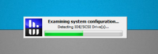
Una vez detectados todos los dispositivos y componentes, procedera a mostrarnos la pantalla inicial, en la que muestra el estado actual de los componentes, en mi caso la CPU, la GPU y la memoria RAM.
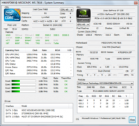
También saldrá una ventana muy similar a la ventana principal de everest enseñando todos los componentes del sistema com desplegables, esto es similar al comando msinfo32, probadlo desde inicio/ejecutar.
Lo que mas me ha gustado de este programa es la posibilidad de monitorizar todos los sensores que tiene el ordenador, ¿comorrrrr, que mi ordenador tiene sensores? pues claro! El sistema operativo necesita saber la temperatura de todos los componentes por si alguno se sobre calienta poder apagarse antes de que pueda dañarse.
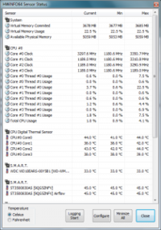
Si usamos Windows 7 también existen widgets para ver las estadísticas a tiempo real de CPU, RAM, GPU, Tarjeta de red y demás componentes.
Descargar HWiNFO para Windows de 32 bits
Descargar HWiNFO para Windows de 64 bits
El brazo de hielo de la muerte filmado en la Antártida por primera vez
Thu, 24 Nov 2011 01:03:23 PST
Vivimos en un mundo de maravillas. Desde que la tecnología lo ha empezado a permitir y cada vez más personas podemos acceder a impresionantes grabaciones y fotografías, hemos empezado también a conocer lo que esconden los rincones de nuestro planeta, y nos está encantando. Por primera vez en la historia se ha conseguido filmar el [...]
Vivimos en un mundo de maravillas. Desde que la tecnología lo ha empezado a permitir y cada vez más personas podemos acceder a impresionantes grabaciones y fotografías, hemos empezado también a conocer lo que esconden los rincones de nuestro planeta, y nos está encantando.
Por primera vez en la historia se ha conseguido filmar el llamado brazo de hielo de la muerte, una formación de hielo que se da en la Antártida y acaba con cualquier forma de vida que se encuentra a su paso.
Los méritos son para Hugh Miller y Doug Anderson de la cadena británica BBC One que se encontraron con este fenómeno durante la grabación del programa Frozen Planet. Como os podéis imaginar no fue tarea fácil, ya que se tuvo que instalar un equipo de grabación en time-lapse tras una capa de hielo que ronda los 20 grados bajo cero y que para colmo se encuentra bajo el volcán Erebus, donde las aguas muy poco accesibles están a una temperatura de 2 grados bajo cero.
El proceso es magnífico, y lo bien rodado que está le deja a uno boquiabierto, no parece real. Pero, ¿cómo se forma este brazo de hielo de la muerte? La capa de hielo de la Antártida ronda los -20ºC, mientras que el agua que hay debajo está a -2ºC. Este agua derrite la parte inferior de la capa de hielo, que se regenera por su parte superior congelando más agua debido a las bajas temperaturas y los fuertes vientos, de modo que está siempre en continua renovación.
En este ciclo de vez en cuando el hielo derretido puede contener concentraciones muy altas disueltas de sal, formando lo que conocemos como salmuera. La salmuera es más densa que el agua que la rodea, y por lo tanto se hunde hasta el fondo marino. Este canal de agua está muchísimo más frío que el resto de agua, de modo que según entra en contacto con el agua más salada se forma hielo. En su avance hasta el fondo acaba formando un brazo entero de hielo, el conocido como brazo de hielo de la muerte.
El proceso es tan rápido y las temperaturas que alcanza tan bajas que acaba con toda la vida que encuentra a su paso, principalmente erizos y estrellas de mar. Estos quedan literalmente atrapados por el hielo y mueren congelados.
Es impresionante poder ver estos fenómenos que ocurren en el mismo planeta en el que vivimos, que gracias a técnicas como el time-lapse y tecnologías que permiten sumergir cámaras a temperaturas tan extremas bajo el océano antártico, hacen que lo disfrutemos cómodamente desde nuestras casas.
vía | BBC
Alternativas gratis a Office: OpenOffice, LibreOffice y Google Docs
Wed, 23 Nov 2011 10:38:42 PST
Hola omicronianos, hoy me voy a poner en la perspectiva de todos aquellos que tengan una lucha personal contra el software de pago ( y no son.. digo sois pocos ) En particular me voy a centrar en Office. La ofimática es un campo que prácticamente todo el mundo acaba tocando y la razón es [...]
Hola omicronianos, hoy me voy a poner en la perspectiva de todos aquellos que tengan una lucha personal contra el software de pago ( y no son.. digo sois pocos  )
)
En particular me voy a centrar en Office. La ofimática es un campo que prácticamente todo el mundo acaba tocando y la razón es simple, es absolutamente necesaria. Debido a esta necesidad que todos experimentamos ya sea porque tenemos que hacer un trabajo usando Word, una presentación usando PowerPoint o una tabla de datos Excel, Microsoft decidió explotarla ya hace bastante tiempo, creando el mejor software de ofimática que encontramos en el mercado.
Como veis he subrayado “mejor”, y ¿por qué? pues porque no necesariamente los segundos ni los terceros tienen que ser un software “pobre o malo”. Es aquí es donde empieza lo realmente productivo del post ya que vamos a hablar de alguna que otra alternativas totalmente gratuitas.
OpenOffice
OpenOffice: Quizá sea la más conocida entre todas las posibles ya que es la segunda mas extendida. Todas aquellas personas que usen alguna distribución de Linux sabrán de que hablo, es un software excelente que nos ofrece los mismos servicios que Office. Es capaz de compatibilizar perfectamente todos los archivos de Microsoft Office. Open Office al igual que su principal oponente posee varios programas cada uno destinado a una función:
-
Writter: Es un procesador de textos, el equivalente a Word.
-
Calc: Es una hoja de cálculo, el equivalente a Excel.
-
Impress: Realiza presentaciones, el equivalente a Power point.
-
Base: Es una base de datos, el equivalente a Access
-
Drawing: Es un editor de gráficos vectoriales, el equivalente a Visio.
-
Math: Esta aplicación esta diseñada para crear formulas matemáticas, es similar al complemento que se instala en Microsoft Word.
La web de OpenOffice es esta y la descargadel programa es esta.
LibreOffice
LibreOffice: Esta suite ofrece gran variedad de servicios iguales o mejores a OpenOffice, es importante añadir que la comunidad de LibreOffice es muy activa, ya saben como mueve a la gente “esto” de vender algo gratis y que aun encima sea sin ánimo de lucro. La web de la suite es esta y lo podréis descargar desde aquí. Todos aquellos que uséis distribuciones de Linux como Ubuntu, lo conoceréis ya que viene incorporado y supongo que estaréis deacuerdo al admitir que probablemente sea la mejor opción de este post.
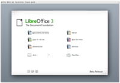
como veréis en la imagen superior dispone de servicios muy similares a los de OpenOffice con los cuales podréis realizar tanto Hojas de Cálculo como Presentaciones, trabajos en un gran procesador de texto…
Google Docs
Google Docs es un gran y completo servicio de Google, la principal diferencia es que no es un programa que te instales en tu ordenador sino que lo utilizas desde tu navegador, y esto como todo tiene sus ventajas y sus desventajas pero como ya digo es tan solo otra opción. Google Docs nos ofrece la misma variedad de programas (procesador de textos, hoja de cálculo, presentaciones…) y es capaz de compatibilizar todas las extensiones de los dos Office anteriores. Es imprescindible recordar que al ser en el navegador podéis compartir estos documentos con vuestros contactos de forma fácil y sencilla.
Siempre estará la opción de crackearse el Microsoft Office pero tal vez este no sea el blog adecuado para esas cosas .
Crea tu propio almacenamiento en nube ilimitado o disfruta de 5GB gratis con Pogoplug
Wed, 23 Nov 2011 03:01:23 PST
Sabemos la importancia cada vez mayor de los servicios en la nube, ofreciendo múltiples herramientas para las que sólo se necesita disponer de un navegador para acceder sin necesitar instalar programas en nuestro ordenador, y entre todas ellas destacan los servicios de almacenamiento liderados por Dropbox y a los que hace poco le dedicamos un [...]
Sabemos la importancia cada vez mayor de los servicios en la nube, ofreciendo múltiples herramientas para las que sólo se necesita disponer de un navegador para acceder sin necesitar instalar programas en nuestro ordenador, y entre todas ellas destacan los servicios de almacenamiento liderados por Dropbox y a los que hace poco le dedicamos un artículo detallando las principales alternativas, sus características y posibles ventajas.
Por otro lado el éxito de los dispositivos móviles implica que un servicio de alojamiento en la nube que quiera contar con un servicio mínimamente atractivo debe contar con una versión móvil que permita que los archivos sean sincronizados y accesibles tanto desde un ordenador como desde una tablet o un teléfono móvil, para lo que se requiere también que se facilite su uso si tenemos en cuenta las condiciones más limitadas que impone el acceso desde un dispositivo con una conexión inferior y una interfaz mínima.
Pogoplug, facilitando el almacenamiento en la nube
Pogoplug ofrece un servicio de almacenamiento en la nube que ofrece 5Gb de almacenamiento de forma gratuita aunque en breve también ofrecerán planes de precios que comienzan por un almacenamiento de 50Gb a 9,95$/mes, algo alto si comparamos con otros servicios. Hasta aquí nada realmente novedoso que permita augurara que Pogoplug se gane su propio hueco. Entonces ¿qué es lo que ofrece que pueda ser tomado en consideración?. La sencillez a la hora de gestionar la subida de los archivos.
Si activamos la carga automática Pogoplug se encarga de subir todos los ficheros y además organizarlos por tipo, ya sea vídeo, música, imágenes o archivos generales en sus correspondiente secciones (Cinema, Jukebox, Gallery, Files).
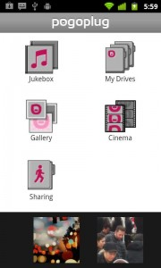Pogoplug permite la gestión de archivos tanto a través de un cliente de escritorio (con versiones para Windows, Mac y Linux), como desde la interfaz web como desde los móviles (versiones para Android e iOS) añadiendo en el cliente de escritorio esa opción para sincronizar automáticamente la carpeta que señalemos así como subir los archivos simplemente con arrastrarlos sobre la interfaz del cliente.
También tenemos disponible un reproductor integrado en el propio cliente y en la interfaz web de forma que podamos visualizar fotos (se muestran las miniaturas de las imágenes), vídeo en streaming (fallando de momento para vídeos en la versión móvil), etc y se integra la función de compartir con las tres principales redes sociales Facebook, Twitter y Google +.
En cuanto a la versión para el móvil también permite automáticamente subir todo el contenido que tengamos alojado en nuestro terminal previa pregunta. Es decir, subir un archivo se puede convertir en algo tan fácil como hacer una foto o grabar un pequeño vídeo y que se suba al servidor sin tener que indicarlo. Por supuesto para quien se preocupe por su plan de datos este tipo de subida es configurable pudiendo deshabilitarla o elegir que sólo se produzca cuando el móvil se encuentra conectado a una red Wi-Fi.
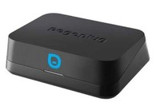En definitiva Pogoplug es un servicio que sin ofrecer más en cuanto a almacenamiento o precios si busca destacarse por facilitar al máximo el alojar y acceder a nuestros archivos en la nube desde cualquier dispositivo, sin embargo ahora es cuando debemos destacar un elemento que no encontramos en otros servicios de alojamiento por encima de la destacada facilidad para organizar archivos, y es la posibilidad de crear tu propia nube con espacio “ilimitado” gracias a los dispositivos Pogoplug Mobile.
PogoPlug Mobile es un dispositivo que auna la copia automática de seguridad de tus archivos multimedia, el aumentar de forma ilimitada la capacidad de almacenamiento y el convertirse en un completo centro de reproducción en streaming. Su capacidad de almacenamiento depende únicamente del medio que conectemos a él ya que admite tanto la lectura de tarjetas SD como la de discos duros externos a través de su puerto USB. Simplemente conecta tu dispositivo de almacenamiento a la unidad PogoPlug Mobile y actívala en my.pogoplug.com.
Más información | Pogoplug
Vía | Imágenes | Genbeta
Nuevo Samsung Chromebook Serie 5 WiFi
Wed, 23 Nov 2011 00:00:12 PST
No sé si no me había fijado antes o por qué me ha llamado hoy la atención un pequeño mensajito que aparecía en la parte superior de mi navegador Chrome al abrir una nueva pestaña. En este me invitaban a conocer los Chromebook. Vale que poco se habla sobre ellos y desde que montaron la [...]
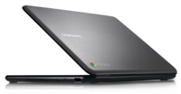
No sé si no me había fijado antes o por qué me ha llamado hoy la atención un pequeño mensajito que aparecía en la parte superior de mi navegador Chrome al abrir una nueva pestaña. En este me invitaban a conocer los Chromebook. Vale que poco se habla sobre ellos y desde que montaron la Chrome Zone Store en Londres poco sabemos de ellos, ya que no han sido el tema central de muchas conversaciones.
Pero con razón me avisaban, y es que Samsung ha anunciado un nuevo modelo de Chromebook con WiFi, el Serie 5. Vamos con las características de un portátil que pretende abrir un nuevo mercado entre las tablets y los portátiles convencionales:
- Sólo 2 cm de grosor
- Teclado Chrome de tamaño completo
- Procesador Intel Dual-core
- Pantalla de 12.1″ SuperBright Display (36% más brillante que una normal) y 1280 x 800 de resolución
- Arranque en menos de 10 segundos
- Hasta 6 horas de duración de batería
- Dos puertos USB con posibilidad de carga de dispositivos móviles
- Lector de tarjetas de memoria
¿Y el precio? Pues 349$ en su salida en EEUU, un precio que sigue siendo algo caro para los que pensaban que estos portátiles de Google serían de bajo coste y llevarían un terminal a cada casa por un precio muy asequible. Hay que reconocer que no son carísimos, pero por la diferencia estoy seguro que el cómo la gente se lo plantea es pensando que para gastarnos eso nos podemos comprar algún portátil normal con más potencia y un sistema operativo convencional que nos de mucha más versatilidad.
Mucho trabajo tienen que hacer todavía Samsung, Acer y Google para popularizar los Chromebooks, y tendrán que empezar por rebajar el precio, o será el fracaso el que como ocurrió con Logitech y Google obligó a rebajar drásticamente el Revue porque no quedaba otra salida.
Gestiona tu Google Calendar fácil y cómodamente con Calendar G
Tue, 22 Nov 2011 06:45:45 PST
Calendar G es una aplicación multi-plataforma, para gestionar nuestro google calendar desde el escritorio cómodamente. Ofrece varias y fáciles opciones para gestionar nuestras alertas, avisos o actualizaciones de nuestros calendarios. Esta aplicación creada por egg-on-egg una empresa que tiene varias aplicaciones para sincronizar nuestro smarthphones con nuestro Pc o Mac, Calendar G esta basada en adobe air. La aplicación una vez descargada la podemos abrir y nos aparece [...]
Calendar G es una aplicación multi-plataforma, para gestionar nuestro google calendar desde el escritorio cómodamente. Ofrece varias y fáciles opciones para gestionar nuestras alertas, avisos o actualizaciones de nuestros calendarios.
Esta aplicación creada por egg-on-egg una empresa que tiene varias aplicaciones para sincronizar nuestro smarthphones con nuestro Pc o Mac, Calendar G esta basada en adobe air.
La aplicación una vez descargada la podemos abrir y nos aparece una ventana, para mi opinión con muy buena interfaz como toda la app.En esta ventana nos permite iniciar sesión y escoger idioma( de momento solo dispone de japonés, chino e ingles). Nos pide una adress key que es para no tener publicidad al enviarnos los avisos, para conseguirla se tiene que pagar 5 dolares, algo que no creo muy necesario, ya que tampoco nos de más opciones en la app.
Si usamos la version gratuita solo con poner email y contraseña, podemos hacer click en Free user, el botón de Login es por si tenemos la key.
Al iniciar sesion ya podemos empezar a gestionar nuestros calendarios. Nos deja crear eventos, modificar los creados y en la pestaña view nos va a desplegar el calendario, donde podemos cambiar sus vistas, por los eventos para ver sus características, también nos deja cambiar si tenemos mas de un calendario activo en nuestra cuenta de google.
Debajo de el menú view, tenemos el del color, que nos permite cambiar el color de fondo del texto, algo para darlo un toque más personal a su interficie .El siguiente botón clear es para dejar en blanco los campos de data/hora, nombre y características del evento.
Una aplicación simple, con un aspecto para mi gusto agradable.Muy aconsejable para la gente que use con mucha frecuencia el google calendar y tenga como una cierta pasión para los widgets ya que por su aspecto lo parece.
Calendar G
Google lanza una nueva app de búsqueda para iPad totalmente renovada
Mon, 21 Nov 2011 23:54:08 PST
Ya sabéis cómo funciona esto normalmente. Android es de Google y siempre cuida más sus aplicaciones para este sistema operativo, y lo ha demostrado una y otra vez sacando aplicaciones muy poco trabajadas como la de Gmail para iOS que falla más que una escopeta de feria. Sin embargo hoy nos encontramos con una excepción, [...]
Ya sabéis cómo funciona esto normalmente. Android es de Google y siempre cuida más sus aplicaciones para este sistema operativo, y lo ha demostrado una y otra vez sacando aplicaciones muy poco trabajadas como la de Gmail para iOS que falla más que una escopeta de feria.
Sin embargo hoy nos encontramos con una excepción, la nueva app de búsqueda de Google para iPad, una aplicación totalmente renovada que viene con muchísimos cambios y una preciosa interfaz que hará de las búsquedas y la navegación por Internet una nueva experiencia para los usuarios de iPad.
La aplicación es básicamente el buscador de Google, donde todos sus servicios de búsqueda por voz, por imágenes, mapas, etc, están integrados. La idea de esta renovada aplicación es hacer de las búsquedas algo mucho más fácil e intuitivo. Todo es más visual y se introduce la posibilidad de interactuar en cualquier proceso.
Vemos que en la búsqueda ya se añade Google Instant, de modo que cuando empezamos a escribir los resultados aparecen según la parte que tengamos escrita de la búsqueda. Cuando abrimos un resultado de la búsqueda no se abre en una nueva pestaña, sino en esa misma pero en un lateral, de modo que podemos desplazar literalmente la pantalla para mostrar los resultados o únicamente el que hemos abierto.
Otro ejemplo de los cambios son los resultados de imágenes, ya que al abrir una imagen no se queda como única y estática, obligándonos a volver a atrás para ver el resto de resultados, sino que lo hace creando un carrusel en el que nos podemos desplazar por todas las imágenes de los resultados.
También se añade Instant Previews, un modo de visualización de resultados de páginas webs en el que no sólo vemos texto, sino una preview de toda la página web, de modo que podemos saber perfectamente dónde nos metemos antes de entrar.

Y todo esto es sólo parte de lo que esta aplicación trae, lo mejor es que la pruebes y disfrutes de ella.
Está disponible para iPad y iPad2 con una versión igual o superior a iOS 4.0 en el App Store.
Más información en Google Mobile blog
Cambia automáticamente los fondos de pantalla con Mourao Wallpaper Changer
Sun, 27 Nov 2011 07:28:28 PST
Algunas personas les gusta mantener una imagen de forma permanente como fondo de pantalla, pero otros, prefieren cambiar su fondo de pantalla de vez en cuando. Mourao Wallpaper Changer es una aplicación que automatiza el proceso de cambio de fondo de pantalla después de un periodo de tiempo establecido por el usuario, es un pequeño programa totalmente gratuito y puede ser utilizado no sólo en windows XP, Vista y 7. Windows 7 ya [...]
Algunas personas les gusta mantener una imagen de forma permanente como fondo de pantalla, pero otros, prefieren cambiar su fondo de pantalla de vez en cuando.
Mourao Wallpaper Changer es una aplicación que automatiza el proceso de cambio de fondo de pantalla después de un periodo de tiempo establecido por el usuario, es un pequeño programa totalmente gratuito y puede ser utilizado no sólo en windows XP, Vista y 7.
Windows 7 ya trae algo parecido a esto, pero esta limitado por un tiempo ya establecido y el cual no podemos cambiar. MouraoWallpaper Changer permite establecer un intervalo de tiempo personalizado para que el fondo del escritorio cambie de forma automática.
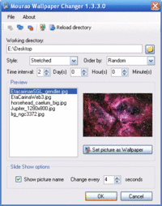
Para empezar, seleccionamos la carpeta que contiene los fondos de pantalla que vamos a usar, desde el botón “Explorador de archivos” en la parte superior. Elegir el estilo de su fondo de pantalla de mosaico, centrada o alargada, y seleccionar el orden de las imágenes y seleccionamos el intervalo de tiempo entre el cambio de imagen, que puede ser cada día, hora, minuto o segundo. En la parte izquierda se encuantra la lista con las imagenes que se van a usar como fondo y a la derecha una vista previa de la imagen seleccionada. Haciendo clic en “Set picture as wallpaper” ( Establecer imagen como fondo de pantalla) la imagen seleccionada se pondrá en primer lugar. En la parte de abajo tildando “show picture name” conseguimos que el nombre de la imagen pueda verse cada un tiempo determinado, que se puede personalizar con las opciones que se encuentran a la derecha de este. Cuando este todo lista pulsamos en “Ok”. Y ya esta ahora podremos disfrutar de nuestros fondos de pantalla.
Tiene dos cosas en contra, la primera es que esta en ingles, pero su interfaz es muy fácil de entender, y la segunda que esta limitado solo para imágenes en formato .jpg
Disponible para Windows XP/VISTA/7
Descarga: Mourao Wallpaper Changer
Ya disponible en España BlackBerry BBM Music
Sun, 27 Nov 2011 01:34:42 PST
Lo ha hecho un poco por lo bajini, pero desde hace unos días los usuarios de BlackBerry ya pueden disfrutar en España del servicio de música BBM Music, una alternativa a servicios como Spotify que aunque tiene una filosofía diferente pretende cambiar el mercado de la música, especialmente el dirigido a dispositivos móviles. Ya os [...]
Lo ha hecho un poco por lo bajini, pero desde hace unos días los usuarios de BlackBerry ya pueden disfrutar en España del servicio de música BBM Music, una alternativa a servicios como Spotify que aunque tiene una filosofía diferente pretende cambiar el mercado de la música, especialmente el dirigido a dispositivos móviles.
Ya os contamos en Agosto detalles sobre BBM Music, ya que fue cuando se dio a conocer al resto del mundo, pero es ahora cuando ha llegado por fin a España.
La comparación con Spotify lleva a error en un principio, ya que el funcionamiento poco tiene que ver. No nos encontramos aquí con un servicio de pago mensual en el que tenemos acceso a música ilimitada por streaming. Ni si quiera es un servicio de streaming con publicidad al uso y por supuesto sólo está disponible para BlackBerry.
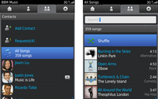
Con BBM Music empezamos eligiendo 50 canciones iniciales para crear nuestra biblioteca musical inicial, de la que podremos cambiar 25 cada mes. Pero claro, 50 canciones son muy pocas, y aquí es donde conocemos la gracia de BBM Music, ya que también podemos acceder a las 50 canciones de nuestros amigos. Es decir, la biblioteca está compuesta por nuestras 50 canciones y las 50 canciones de cada uno de nuestros amigos, así que cuantos más amigos tengamos, más canciones habrá en nuestra biblioteca. Es desde luego una apuesta altísima y muy arriesgada por el apartado social en la música.
El primer mes es gratis para que se pruebe, y a partir de ahí tendrá un coste de 4.99€ al mes. Esto es lo mismo que cuesta la cuenta básica de Spotify, con la que no podemos disfrutar de la música en el móvil, por lo que han elegido bien el precio, aunque estoy seguro que a la hora de elegir la gente se lo va a pensar muchas veces, porque lo de pagar por música que no elegimos al final no va a gustar demasiado, ¿tu cómo lo ves? ¿Crees que merece la pena esto o pagar 10€ al mes por Spotify Premium?
Descarga BBM Music de App World
Descarga fotografías públicas de Flickr con Photo Downloader
Sat, 26 Nov 2011 08:45:27 PST
Seguro que conocéis Flickr, esa red social con la cual podemos compartir fotos. Con Flickr Photo Downloader podrás descargar fotos de Flickr a tú ordenador de una manera más fácil y cómoda. Su configuracion es muy sencilla y se hace todo desde la interfaz de la aplicación. La carpeta en la que se guarda los archivos es elegida automáticamente por el programa aunque se puede elegir la carpeta [...]
Seguro que conocéis Flickr, esa red social con la cual podemos compartir fotos. Con Flickr Photo Downloader podrás descargar fotos de Flickr a tú ordenador de una manera más fácil y cómoda.
Su configuracion es muy sencilla y se hace todo desde la interfaz de la aplicación. La carpeta en la que se guarda los archivos es elegida automáticamente por el programa aunque se puede elegir la carpeta de descarga también, útil para usuarios que no simplemente quieran tener las fotos en su equido, pero es probable que otros usuarios quieran cambiarlo manualmente a otro lugar del equipo.
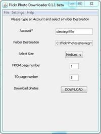
“Select Size” es para elegir el tamaño de la foto, que puede ser pequeña, mediana o grande, y “from page number & To page number” para desde que pagina descargar y en cual parar.
Con un clic en el botón de descarga (“DOWNLAOD”) se inicia el proceso. Un inconveniente que tiene es que no muestra una barra de progrese que permita ver el proceso de descarga, que en algunos casos no debería ser un gran problema por que una imagen se descarga rápido, pero si son muchas imágenes ya es algo a tener en cuenta. Una vez ya estén todas las fotos descargadas Flickr Photo Downloader mostrara un mensaje en una ventana informando que la acción ya esta completa. En dicha ventana también aparece un botón ”Watch me” si pulsamos en el nos muestra la carpeta donde están las imágenes guardadas.
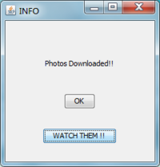
El programa es compatible con las versiones tanto con las versiones de 32bits y 64bits de Windows.
Descargar Flickr Photo Downloader
Accede a las fotos y documentos de tus redes sociales desde el explorador de archivos con Social Folder
Sat, 26 Nov 2011 01:45:50 PST
¿En cuantas redes sociales, servicios online tenéis documentos? Últimamente es muy extensa la lista de redes sociales que existen y en las cuales tenemos infinidad de fotografías subidas, o servicios de almacenamiento como google docs, youtube en los que tenemos guardado otra gran parte de documentos. Cada día nos intentan convencer de nuevos servicios online para guardar nuestras cosas para disponer de ellas en [...]
¿En cuantas redes sociales, servicios online tenéis documentos? Últimamente es muy extensa la lista de redes sociales que existen y en las cuales tenemos infinidad de fotografías subidas, o servicios de almacenamiento como google docs, youtube en los que tenemos guardado otra gran parte de documentos.
Cada día nos intentan convencer de nuevos servicios online para guardar nuestras cosas para disponer de ellas en el máximo de sitios posibles con tan solo conectarnos a Internet. Sin tener que llevar ningún pendrive o disco externo lleno de cosas.Y con tantos servicios, es facil de olvidar donde tenemos cada documento o en que red social tenemos algunas fotos en concreto.
Ahora con Social folders podremos tenerlo todo a disposición sin tener que ir cambiando de pagina web. Social Folder lo que nos facilita es la tarea de encontrar los documentos. Es una aplicación para Windows y Mac que se conecta a diversas redes sociales y servicios , de esta manera sincroniza todos los archivos y los guarda en nuestro disco duro. Los archivos aparecen en una carpeta dentro de “Mis documentos”, dicha carpeta se llama “My Social Folders”.
Pero su función no termina en descargarnos nuestros contenidos de nuestras cuentas, Social Folder quiere ir algo más allá que solo organizar. Una vez tengamos las carpetas sincronizadas , también podemos modificar el contenido. Podemos mover, quitar fotos y documentos y cambiar los de álbum.
¿Cuantas veces no has pensado en subir todas las fotos de una fiesta en el Facebook pero por no ir cargando foto a foto lo has dejado de lado?. Ahora con esta aplicación podrás crear directamente una carpeta con las fotos dentro como si estuvieras creando una carpeta de windows.
Puede que con Social folder tengamos las cosas más faciles pero aparte de esto, es la aplicación con estas funciones, con más redes sociales disponibles para sincronizar. Un gran servicio para facilitar la gestión de documentos en la nube.
Cómo usar iCloud para sincronizar archivos entre Mac como con Dropbox
Fri, 25 Nov 2011 07:26:08 PST
Hace relativamente poquito que se puede disfrutar del servicio de Apple para la sincronización de archivos en la nube. Con el podemos tener sincronizados música, archivos de iWork, presentaciones, etc. en todos los dispositivos Mac que tengamos. Esto está muy bien, por supuesto. La cuestión es que Apple con la voluntad de evitar dolores de [...]
Hace relativamente poquito que se puede disfrutar del servicio de Apple para la sincronización de archivos en la nube. Con el podemos tener sincronizados música, archivos de iWork, presentaciones, etc. en todos los dispositivos Mac que tengamos. Esto está muy bien, por supuesto.
La cuestión es que Apple con la voluntad de evitar dolores de cabeza, por suerte o por desgracia hace que toda la gestión de archivos cada vez sea más transparente de cara al usuario. Así es como nosotros no sabemos dónde se guardan los archivos o en qué carpetas se realiza la sincronización automática. Sólo sabemos que si por ejemplo creamos una presentación con Keynote, aparecerá en todos los dispositivos. Pero os vamos a explicar un truquito para convertir iCloud en una especie de Dropbox, en la que lo que pongamos en la carpeta de sincronización se nos replicará al resto de Mac.
Porque como decíamos, para nosotros el proceso es totalmente transparente, no sabemos dónde se ubican las carpetas de sincronización pero sabemos y vemos que lo hace. Pero eso amigos mios, no es un secreto que se pueda guardar mucho tiempo. Siempre hay alguien con hambre de saber y logra encontrar la manera. Y así ha sido.
El truco es bien fácil, hay que ir a buscar la carpeta ~/Library/Mobile Documents ya que esta es la carpeta clave para todo el proceso. Todo lo que pongamos dentro de ella se sincronizará con el resto de macs. En realidad lo único necesario para que esto funcione al 100% es tener activada la opción “Documentos y datos” y una aplicación de iWork (keynote, pages o numbers), funcionando y configurada con iCloud.
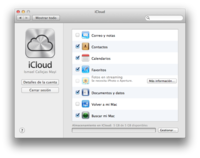No es demasiado complicado, pero igualmente es más cómodo y fácil Dropbox y también disponemos de 5GB gratuitos. Pero igualmente es otra alternativa a tener en cuenta para sincronizar nuestros dispositivos en Mac. La ventaja en sí es que sólo nos tendremos que preocupar de tener un “master” con el que propagar los archivos que queramos compartir con el resto. iCloud también sincroniza las fotos, mail, contactos y configuraciones automáticamente.
Vía | The Next Web
Un estudiante fabrica un iPad casero por 60€
Fri, 25 Nov 2011 00:27:16 PST
Dicen que el amor mueve montañas, que es capaz de todo. Y sino que se lo digan a este estudiante chino que en tan solo 10 días construyó un iPad por 60€. ¿Para qué? Pues porque quería a toda costa regalarle a su novia un iPad pero no tenía suficiente dinero para hacerlo. Así que [...]
Dicen que el amor mueve montañas, que es capaz de todo. Y sino que se lo digan a este estudiante chino que en tan solo 10 días construyó un iPad por 60€. ¿Para qué? Pues porque quería a toda costa regalarle a su novia un iPad pero no tenía suficiente dinero para hacerlo. Así que la mejor solución, fabricarlo él mismo.
El artífice de esta obra tecnológica inspirada por su amor es Wei Xinlong, un estudiante de la Universidad de Changchun en China. Para la fabricación de este iPad casero usó como base los vídeos que hay por Internet de gente fabricando tablets caseras, entre eso y un poco de mañana cualquiera puede apañarse. Por lo menos él pudo.
La placa base, la tarjeta de vídeo y la CPU las sacó de un viejo ordenador, lo que además le restó costes a la fabricación del iPad. Lo que si tuvo que comprar por Internet fueron la batería y la pantalla táctil, donde se fue la mayor parte de los 60€ de presupuesto.
Respecto al resultado final no está nada mal. Evidentemente las líneas no son las de un iPad y en las fotos se puede apreciar que es muy cuadrado y gordo, pero el simple hecho de que funcione bien ya es todo un logro, ya que aparentemente es capaz de reproducir vídeos, juegos y libros correctamente. La pedrería es un extra personalizado que tiene como privilegio el ser CEO de su empresa de iPads caseros.
Supongo que este tipo de casos no son suficientes como para crear antecedentes y empezar cada uno a fabricarse sus tablets caseras, pero es una buena iniciativa que demuestra un poco que con conocimientos, maña y una razón se pueden hacer cosas increíbles.
vía | Geekets
Cómo usar Google Music fuera de Estados Unidos
Thu, 24 Nov 2011 06:38:29 PST
Siempre hace ilusión cuando se presenta un producto o servicio nuevo en internet. Tenemos ganas de probarlo cuanto antes, de saborear de primera mano y experimentar lo que en su día hemos visto. Pero parece que es costumbre desgraciadamente que según que cosas no podamos ya que están limitadas por países. El último caso más reciente [...]
Siempre hace ilusión cuando se presenta un producto o servicio nuevo en internet. Tenemos ganas de probarlo cuanto antes, de saborear de primera mano y experimentar lo que en su día hemos visto. Pero parece que es costumbre desgraciadamente que según que cosas no podamos ya que están limitadas por países.

El último caso más reciente que tenemos es el de Google Music, que ya salió de beta y con el que se pueden subir a la nube hasta 22.000 canciones de manera gratuita como ya te explicamos, y que sólo está disponible en Estados Unidos. Pero como en internet es más patente que nunca aquello de “hecha la ley, hecha la trampa”, os vamos a contar de qué manera podéis disfrutar de este servicio. ¿Cómo?
El problema básicamente es que Google comprueba de dónde venimos por nuestra Ip, con ella puede saber nuestra localización con lo que “engañarlo” será cambiando nuestra ip por una americana. ¿Sencillo? Bueno, en principio si, hay muchos proxys gratuitos con los que podemos navegar como si estuviéramos en USA. Pero su funcionamiento en la mayoría de los casos deja mucho que desear. Os vamos explicar un método que funciona bastante mejor, no es demasiado difícil, y es más seguro.
Lo haremos con la ayuda de Tor, el sistema más popular para navegar anónimamente a través de una serie de túneles virtuales. Aunque lo interesante es poder escoger por qué túnel salir, es decir, en qué país estaremos ubicados virtualmente. Y esto lo conseguiremos descargándonos el “bundle” de Tor para nuestro sistema operativo.
Una vez descargado lo instalamos y lo arrancamos. En principio está pensado que una vez arrancado, nuestro navegador ya empiece a funcionar con Tor activado (cebollita en verde). De momento cerraremos el navegador, y le especificaremos a Tor por qué país queremos salir.
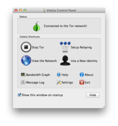
Para eso iremos al icono “View the Network” y se nos desplegará un mapa mundial con un listado de todos los nodos activos, con su respectiva banderita que los identifica. Deberemos escoger uno con bandera americana, a poder ser de los que se encuentren más arriba de la lista. Lo seleccionaremos y dándole al botón derecho del ratón iremos a Copy – Fingerprint.
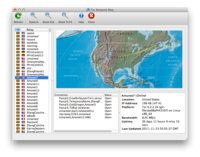
Ahora viene quizá la parte más complicada en la teoría, que es utilizar la información que hemos copiado para modificar el archivo de configuración de Tor y forzarle a que cuando conecte, siempre lo haga por esta salida que le especificamos manualmente. Para ello regresaremos a la ventana de configuración de Tor y clicaremos sobre “Setup Relaying”, iremos a la pestaña Advanced y en la mitad más o menos encontraremos el botón para editar el fichero torrc que es el fichero de configuración de Tor.
Deberemos ir al principio del archivo que se nos abre, y añadir el siguiente texto, sustituyendo blabla por el fingerprint que previamente habíamos copiado:
Exitnodes blabla
StrictExitNodes 1
Bueno pues ya sólo queda guardar el archivo y ya casi que lo tendremos listo. Ya podremos ir al navegador y comprobando previamente que Tor está funcionando, ir a la página music.google.com y registrarnos en Google Music tranquilamente. ¡Y a disfrutar! Fantástico, ¿y a que no ha sido tan difícil?
Via | Engadget
Gana un Chromebook y una entrada para el Google I/O 2012 con Google
Thu, 24 Nov 2011 00:13:55 PST
Si eres desarrollador o tienes una idea para una aplicación web, esta es tu oportunidad. La Chrome Web Store organiza un concurso en el que los ganadores de cada una de las cuatro categorías conseguirá un Chromebook, y el ganador global además una entrada para el Google I/O 2012, el evento más importante del año para [...]
Si eres desarrollador o tienes una idea para una aplicación web, esta es tu oportunidad. La Chrome Web Store organiza un concurso en el que los ganadores de cada una de las cuatro categorías conseguirá un Chromebook, y el ganador global además una entrada para el Google I/O 2012, el evento más importante del año para Google.
Lo bueno es que si no sabes programar pero crees que tu idea es buenísima podrás buscarte alguien que si sepa, formando grupos de un máximo de 3, ya que si salís ganadores habrá un Chromebook para cada uno, nada de repartir y tener que cortarlo en tres partes.
Las categorías del concurso son Ocio, Social y comunicación, Educación y Utilidades, y puedes presentarte rellenando este formulario.
Las aplicaciones presentadas deben básicamente:
-
Incluir un icono de 128 píxeles, según las directrices especificadas en esta página
- Incluir una descripción en el idioma de tu país y, opcionalmente, una descripción en cualquier otro idioma admitido.
-
Incluir al menos tres imágenes (capturas de pantalla), como se describe en esta página
- Ser originales (las aplicaciones desarrolladas anteriormente por los participantes también se considerarán originales).
De todas formas puedes revisar aquí las condiciones para que te quede totalmente claro.
¡Mucha suerte a todos!
vía | Actualidad Google
Horarios y recorridos del Sol y la Luna con Sunrise Sunset Map
Wed, 23 Nov 2011 06:52:44 PST
Hoy quiero presentaros una aplicación tanto web como para Android que nos puede servir mucho para la gente que tenga previsto hacer actividades al aire libre como excursiones, ir hacer fotografias de la salida del sol o cualquier actividad en general al aire libre. Esta aplicación se llama Sunrise Sunset Map, y con ella podemos controlar todos los [...]
Hoy quiero presentaros una aplicación tanto web como para Android que nos puede servir mucho para la gente que tenga previsto hacer actividades al aire libre como excursiones, ir hacer fotografias de la salida del sol o cualquier actividad en general al aire libre.

Esta aplicación se llama Sunrise Sunset Map, y con ella podemos controlar todos los horarios del amanecer, atardecer, anochecer, duración del día y la noche, recorrido del Sol y la Luna, etc. Utiliza la teconolgia de Google Maps y mediante la selección de un punto en el mapa tendremos exactamente las horas para realizar nuestras actividades al aire libre.
Para utilizar esta app tendremos dos opciones. Como primera opción, entrar en su página web, con el servicio totalmente gratuito y de segunda opción nos queda nuestra app para Android. Esta app no es gratuita pero tiene la ventaja de que podremos consultarlo en cualquier sitio.
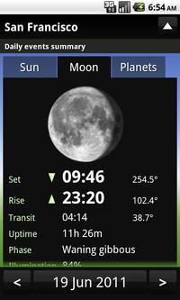
Es un servicio simple y rápido de consultar. Podemos seleccionar cualquier parte del mundo e incluso cambiar de mes día y año seleccionando la fecha que queramos para consultar las condiciones de luz. Y para la gente más curiosa y que le gusta tener todo la información más extensa podréis seleccionar un sitio y crear un archivo pdf del lugar con la informacion de todo el año.
Yo me quedo con esta aplicación para ir a hacer fotos de los amaneceres y atardeceres de forma puntual y con la ventaja de poder consultar cualquier lugar desde el mismo sitio.
Descargar Sunrise Sunset Map del Android Market (1,49€)
Sunrise Sunset Map
El tráfico web se cuadriplicará alcanzando 7,8 zetabytes en 2015
Wed, 23 Nov 2011 02:17:56 PST
El uso de internet está evolucionando a pasos de gigante en estos últimos años. Con la llegada de los smartphones y con el hábito ya adquirido de internet como herramienta tanto para el uso profesional como para el ocio, la tasa de datos que almacena la red se ha disparado. Tanto que ya Cisco ha [...]
El uso de internet está evolucionando a pasos de gigante en estos últimos años. Con la llegada de los smartphones y con el hábito ya adquirido de internet como herramienta tanto para el uso profesional como para el ocio, la tasa de datos que almacena la red se ha disparado.
Tanto que ya Cisco ha bautizado este hito como “la era Zetabyte”. En un estudio que han realizado, aseguran que el tráfico IP anual alcanzará el Zetabyte a finales del 2015. Y que en 2015 el tráfico global llegará a los 966 exabytes por año, 80,5 exabytes por mes. Muchos ceros en un mundo de ceros y unos.
Y las previsiones van mucho más allá, ya que en 2015 habrá 6 millones de hogares en todo el mundo generando alrededor de un Terabyte por mes en tráfico de internet. Pero sin duda uno de los datos más interesantes es que un creciente volumen del tráfico de internet proviene de dispositivos que no son ordenadores. En 2010 únicamente el 3% del tráfico de internet provenía de este tipo de dispositivos (móviles, tablets,etc). Pero para el 2015 se prevé que el tráfico ascienda hasta un 13%. Está claro que tanto móviles, tablets como televisores y otros dispositivos están creciendo.
Los patrones de consumo que comentábamos al principio, internet forma parte de nuestras vidas y de nuestros hábitos de consumo. Así que no es de extrañar que el tráfico de vídeo en internet también suba como la espuma. Ya en el año 2010 sobrepasó las cifras de tráfico al del peer-to-peer (P2P), y para el 2012 se habrá convertido en el 50% del trafico de internet. Así es como se ha desbancado al P2P como el tipo de tráfico más generado, puesto que ha ostentado durante 10 años. Ahora es el vídeo el que ocupa este lugar.
Os dejamos algunos datos más muy interesantes, una especie de cronología de lo que sucederá:
- 2012: El vídeo en internet sobrepasará el 50% del tráfico de internet.
- 2012: El número de hogares generando 1 Terabyte por mes alcanzará el millón.
- 2014: Una quinta parte del tráfico de vídeo vendrá de Televisiones, smartphones y otros dispositivos no-pc.
- 2015: El tráfico de internet desde dispositivos Wireless superará al tráfico de dispositivos con cable.
- 2015: El tráfico IP anual alcanzará el Zetabyte (966 hexabytes).
Increíble. Tanto número a mi personalmente me supera, pero no es de extrañar por el uso tan intensivo que hacemos en nuestros hogares de internet. ¿y quien no tiene un smartphone ya? ¿Os parecen exageradas las previsiones? Esperamos vuestras opiniones en los comentarios.
Via | Cooking ideas | Cisco
Un matemático italiano quiere superar a Google con un nuevo buscador
Tue, 22 Nov 2011 10:58:58 PST
No hay discusión si decimos que en estos momentos Google goza de toda la popularidad e importancia gracias a su buscador principalmente. Otros productos vinieron después pero la joya de la corona es y será el buscador. Muchos han intentado plantar cara ofreciendo lo mismo o cosas diferentes pero que no han terminado de acabar [...]
No hay discusión si decimos que en estos momentos Google goza de toda la popularidad e importancia gracias a su buscador principalmente. Otros productos vinieron después pero la joya de la corona es y será el buscador.
Muchos han intentado plantar cara ofreciendo lo mismo o cosas diferentes pero que no han terminado de acabar con la hegemonía de la que goza Google. Es el rey indiscutible, hasta ahora. Massimo Marchiori es un profesor de matemáticas de la Universidad de Padua, y entre otras cosas es padre del algoritmo con el que se desarrolló el motor de búsqueda de Google. Marchiori lanzará antes de final de año Volunia, un buscador diferente y que asegura podría ser “el motor de búsqueda del futuro”.
Ya ha pasado algo de tiempo desde que ayudara en el desarrollo del algoritmo de búsqueda de Google. En 1996 presentaba su algoritmo Hyper Search y entre el público asistente estaba Larry Page, con 23 años . Afirma que no se trata de ningún tipo de venganza, y que tanto Larry Page como Sergei Brinn siempre han reconocido su contribución en el algoritmo. Tampoco se arrepiente de haber decidido no participar de la aventura comercial que ha encumbrado a Google como el buscador más popular.
Este matemático italiano tiene un curriculum bastante curtido en cuanto a la web se refiere. Es miembro del World Wide Web Consortium (W3C), co-autor del estándar de privacidad en la red (W3), e investigador en el MIT. Es indiscutible su conocimiento de los buscadores. El ser uno de los 100 mejores investigadores del mundo, premio otorgado en 2004 por el Tecnology Review (una revista editada por el MIT) lo corrobora.
Asegura Marchiori que su motor de búsqueda supone una perspectiva diferente en lo que estamos acostumbrados. “Si no hubiese pensado que se trata de algo grande, capaz de competir con los gigantes de las búsquedas online, nunca me hubiera involucrado en algo así”. Esta afirmación nos hace pensar que realmente Volunia pueda aportar algo totalmente diferente a Google y los motores de búsqueda que van detrás de él. Desgraciadamente no ha dado más detalles sobre qué cosas diferencian Volunia del resto, un misterio que se mantiene si consultamos su página web en la que sólo encontraremos un vídeo explicativo del propio Marchiori en el que nos invita a probar Volunia.
Volunia pretende manejar todo el volumen mundial, y tendrá soporte en 12 idiomas. La idea la están desarrollando en su mayoría antiguos alumnos de Marchiori, y la financia Mariano Pireddu, un empresario con más de 20 años de experiencia en el sector tecnologico. De momento descartan nuevos inversores hasta conocer si su idea tiene éxito o no.
¿Qué creeis vosotros? ¿Podrá desbancar a Google? En mi modesta opinión, Volunia parte de algo más que una campaña de marketing. Estoy expectante por conocer qué lo hace diferente y cómo funciona. Pero sí, porqué no, podría triunfar.
Fuente: Networkworld
Sincroniza tus cuentas de Gmail en iPhone con Sent
Tue, 22 Nov 2011 02:50:39 PST
Sent es un cliente de Gmail para iPhone y iPod Touch qué tiene toda la pinta de convertirse en la aplicación para iOS de referencia, siendo más valorada incluso que la propia aplicación nativa de Gmail (aunque con los fallos que estamos viendo últimamente en esta última tampoco es difícil ). ¿Y qué ofrece Sent [...]
Sent es un cliente de Gmail para iPhone y iPod Touch qué tiene toda la pinta de convertirse en la aplicación para iOS de referencia, siendo más valorada incluso que la propia aplicación nativa de Gmail (aunque con los fallos que estamos viendo últimamente en esta última tampoco es difícil ).
¿Y qué ofrece Sent que no aporta la aplicación nativa? Una gran ventaja de esta aplicación es que ofrece soporte multicuenta. A parte de esto, la interfaz gráfica de usuario de la aplicación es bastante elegante y funcional. Aunque veremos que cuenta con más características y que todo el monte no es orégano. A continuación vamos a conocer más detalles acerca de esta aplicación.
Ya vimos a principios de mes como Google renovaba su aplicación oficial de Gmail para los dispositivos móviles de Apple, aunque rápidamente tuvo que quitarla de la AppStore debido a fallos críticos como el de las notificaciones. Al poco tiempo, volvieron a publicarla y aunque parece que funciona algo mejor, no acaba de convencer (el centro de notificaciones sin ir más lejos, sigue dando bastante la lata) y eso propicia que los usuarios busquemos alternativas como Sent.
Las características que nos brinda Sent son las siguientes:
-
Rapidez y fluidez en su uso
-
Seguimiento de las conversaciones en los emails
-
Búsqueda de correos a través de filtros (ej: antes del: 01/01/2011 en:importantes)
-
Favoritos y etiquetas para clasificar mejor los correos
- Posibilidad de adjuntar imágenes
- Soporte multicuenta
Encontramos en esta aplicación dos grandes desventajas. La primera es el precio, y es que Sent cuesta 3,99€ en la AppStore, pero aunque este pudiera ser un buen precio para una aplicación completa y perfecta, se antoja como algo caro cuando no ofrece notificaciones push, aunque el desarrollador comenta que está trabajando en ello y que en futuras versiones los usuarios de la aplicación podrán contar con esta funcionalidad, al igual que una versión adaptada completamente para el iPad.
En principio pinta bien la aplicación, aunque en mi caso esperaré a que incluya las notificaciones push para que pueda contar con ella como una opción real. Otro aspecto que se podría mejorar en futuras versiones, aunque no es algo prioritario, aunque personalmente considero que es algo muy positivo, es el poder incluir soporte a cuentas de correo externas a gmail.
También estaremos atentos a las mejoras prometidas por parte de Google para su aplicación nativa en iOS, porque como ya sabemos, todo lo que sea competencia de cara a mejorar productos (normalmente y cuando hablamos de competencia sana ), beneficia enormemente a los usuarios.
Y los que habéis probado Sent, ¿qué os parece?
Vía | TheVerge
Enlace AppStore | Sent